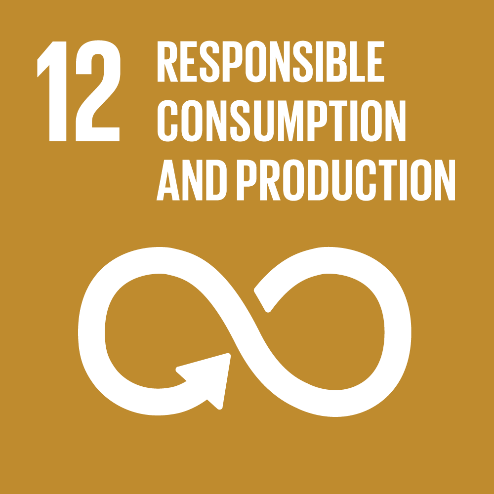

Goal 12: Ensure sustainable consumption and production patterns
Sustainable consumption and production is about promoting resource and energy efficiency, sustainable infrastructure,
and providing access to basic services, green and decent jobs and a better quality of life for all. Its implementation
helps to achieve overall development plans, reduce future economic, environmental and social costs, strengthen economic
competitiveness and reduce poverty.
Sustainable consumption and production aims at “doing more and better with less,” increasing net welfare gains from
economic activities by reducing resource use, degradation and pollution along the whole lifecycle, while increasing
quality of life. It involves different stakeholders, including business, consumers, policy makers, researchers, scientists,
retailers, media, and development cooperation agencies, among others.
It also requires a systemic approach and cooperation among actors operating in the supply chain, from producer to final
consumer.It involves engaging consumers through awareness-raising and education on sustainable consumption and lifestyles,
providing consumers with adequate information through standards and labels and engaging in sustainable public procurement,
among others.

Goals Targets
1) Implement the 10-year framework of programmes on sustainable consumption and production, all countries taking action,
with developed countries taking the lead, taking into account the development and capabilities of developing countries.
2) By 2030, achieve the sustainable management and efficient use of natural resources.
3) By 2030, halve per capita global food waste at the retail and consumer levels and reduce food losses along production
and supply chains, including post-harvest losses.
4) By 2020, achieve the environmentally sound management of chemicals and all wastes throughout their life cycle, in
accordance with agreed international frameworks, and significantly reduce their release to air, water and soil in
order to minimize their adverse impacts on human health and the environment.
5) By 2030, substantially reduce waste generation through prevention, reduction, recycling and reuse.
6) Encourage companies, especially large and transnational companies, to adopt sustainable practices and to integrate
sustainability information into their reporting cycle.
7) Promote public procurement practices that are sustainable, in accordance with national policies and priorities.